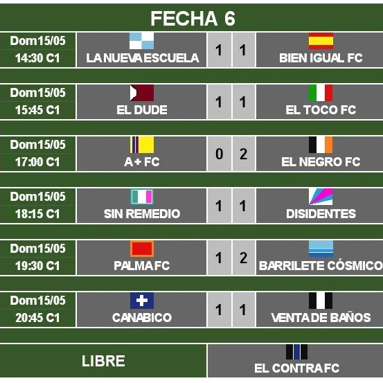

Ultimas Noticias
A PASO FIRME
Contundente triunfo de Bien Igual para seguir muy cerca de la punta: fue con un rotundo 6 a 1 frente a El Contra, en un partido donde claramente le sobró el segundo tiempo.Leer Mas.
SORPRESA
Casi 15 días que no llueve, sol primaveral en pleno mayo, toda estaba en condiciones para el inicio del torneo de la categoría intermedia, pero sorpresivamente llega un mensaje que dice que debido al mal estado del campo de juego la fecha se posponía para la semana que viene.Leer Mas.

Bien Igual F.C logro llegar a primera "A" con este increible partido
Marcador de la Semana
Lunes: 2-1
Martes: 3-3
Miercoles: 0-1
Jueves: 2-0
Viernes: 3-2
Sabado: 1-2
Domingo: 4-0
Todas las noticias
A PASO FIRME
Contundente triunfo de Bien Igual para seguir muy cerca de la punta: fue con un rotundo 6 a 1 frente a El Contra, en un partido donde claramente le sobró el segundo tiempo.
A los 5 segundos de juego Pelu, patea al arco desde el saque de inicio y sorprende al arquero que no puede reaccionar y abre el marcador. A los 7 minutos Gaby conecta de cabeza un preciso centro de Germo para poner el 2 a 0.
El Contra solo tenía aproximaciones que eran desactivadas por una sólida defensa y las pocas que llegan al arco no le generaban ninguna complicación a nuestro arquero.
A mal 15 Sacha lo busca a Germo, que para la pelota deja a dos rivales y dispara fuerte, abajo a la derecha del arquero para poner el 3 a 0. Llega el cuarto que es obra de Sacha: luego de una desborde y posterior pase atras de Facu P. define de primera, cuando venía precipitado en velocidad, abriendo el pie y dejando sin respuestas al arquero.
Acá sucede el único percance de la noche: Facu S. sale a buscar una pelota, choca con el envite desmedido del delantero que lesiona a nuestro arquero y tiene que abandonar la cancha. Sacha toma su lugar.
De todas formas el partido siguió por el rumbo que venía, Germo da otra asistencia perfecta para que Pelu defina ante la salida del arquero para el 5 a 0. Centro de Facu P. y Nica de cabeza pone el sexto con el que nos vamos al descanso.
Los cuatro cambios que se realizaron para arrancar el partido más la relajación por el resultado definido sumado a la incertidumbre que había en el ambiente por la lesión de Facu S. hicieron que en el complemento pasarán pocas cosas: una desatención entre Puma y Ponti que provocó el gol rival, un par de buenas respuestas de Germo (había ocupado el arco en reemplazo de Sacha), el muy buen andar de Mariano, y las ganas de Facu P. de no dar por perdida ninguna pelota.
Nuestras chances más claras estuvieron en los pies de Nica más algún tiro de Titi desde afuera, pero nuestro sexteto de goles no sufrió modificaciones.
6 a 1 final y una semana de descanso, en la fecha que viene quedamos libre, para poder recuperar a nuestro arquero. Igual en caso de que no llegue Vita ya se postula como reemplazo.
SORPRESA
Casi 15 días que no llueve, sol primaveral en pleno mayo, toda estaba en condiciones para el inicio del torneo de la categoría intermedia, pero sorpresivamente llega un mensaje que dice que debido al mal estado del campo de juego la fecha se posponía para la semana que viene.
La versión oficial es que el club no sabía del inicio del torneo y al ver las canchas secas decidieron regalarlas (inundarlas) desde las 13hs hasta las 17hs, o sea que las mismas personas encargadas de juntar las planillas con sus respectivas habilitaciones, organizar el torneo, los horarios y las fechas, para luego mandar los mails con todos estos datos no sabían que hoy arrancaba el torneo.
No nos cerraba mucho.
Por bambalinas circula otra versión: Un integrante de la comisión directiva cuyo equipo jugaba hoy mando a inundar las canchas para que estén intransitables y se suspendan los partidos, ya que varios de las figuras de dicho equipo no podían asistir por distintos motivos. Ojo la disposición no viene de la subcomisión, estos no pueden más que acomodar algún horario y nada más. La orden de riego viene de más arriba.
Algunos provectos retentivos dicen que allá por marzo del 2016 hubo un episodio parecido y justamente involucra a varios de los equipos que participarán de este torneo.
Esperemos que se aclare.
LOS DE ARRIBA SON EL NEGRO LOS PODEMOS ALCANZAR

Llegamos a la mitad del Torneo, y está más peleado que TATA con la pelota, a pesar de haber perdido la punta venimos haciendo una campaña brillante como cabeza de NANO. Tenemos que seguir paso a paso, despacio, lento, sin apurarse igual que PACHU a la hora de cerrar espaldas.
La tabla está ajustada como remera térmica de LOLO, pero esto es largo como historia de KIKO y duro como patada de PUMA Y MOYI, así que, como GERMO cuando se pone a gambetear, cualquier cosa puede pasar, nunca hay garantía de nada como FACU S. cuando le patean al arco, no nos olvidemos que el fútbol es muy caprichoso como el GORDO. Nosotros tenemos que hacer la nuestra y seguir peleando como ALEXIS con los rivales.
Por ahora venimos siendo un plantel largo como zancada de FACU P. y nunca quedamos desarmados como SACHA cuando corre.
Llegan momentos de definiciones y hay que estar fríos como GABY, no nos olvidemos que el torneo es solo de ida, no hay vuelta, igual que BATA cada vez que va para una barra, sigamos sin dar el brazo a torcer, no como NICA que lo tuerce de lo lindo cada vez que ve una cerveza.
Hay que llegar a las últimas fechas bien ubicados, no tomemos como ejemplo a VITA cuando juega de líbero, así no tenemos la misma incertidumbre que genera TITI cada vez que juega.
De MARIANO no voy a poner nada porque me invitó a su casamiento y comí y tome de lo lindo.
Acá el periodismo se vende al mejor postor, si quieren dignidad lean a Rodolfo Walsh.
NOS RESBALAMOS DE LA PUNTA (1ER. TIEMPO)
En un partido muy duro, con una cancha increíblemente embarrada (hace 10 días que no llueve) empatamos 1 a 1 contra LaNuevaEscuelaFC . Dividimos el dominio del juego un tiempo para cada uno, fue un empate justo aunque quedó la sensación que podíamos ganar, ya que el segundo tiempo fue todo nuestro y terminamos apretando al rival contra su arco.
En el primer tiempo El Glorioso no pudo hacer pie (metafórica y literalmente) un equipo largo, sin juego asociado lento y que perdió todas las divididas, a partir de esto se empezó a apostar al pelotazo hacia los dos delanteros cosa que fue totalmente estéril, ya que el viento en contra hacía que la pelota no pase la mitad de la cancha. Para esta altura Facu S. ya era figura, pero a los casi 20 minutos un pelotazo largo a las espaldas de Vita, que estaba jugando en línea, Sacha pierde en velocidad, Facu duda en Salir (ya se había patinado varias veces) y el delantero define sin problema para el 1 a 0.
A partir de ahí el equipo tuvo una leve mejoría peor no generó mucho, lo más peligros fue un tiro libre de Nica que el arquero reaccionó bien.
Nos fuimos al descanso con la certeza de que algo había que cambiar por que así era imposible remontarlo.
NOS RESBALAMOS DE LA PUNTA (2DO. TIEMPO)

Dos cambios, el viento a favor el paulatino secado del campo de juego hicieron que las cosa para el complemento cambiarán drásticamente.
Mariano paso de volante central y se hizo eje del juego, además de cortar muchos avances rivales. Los pelotazos de Diego B. Llegaban con más facilidad a Nica y Facu P. que ganaban todas las divididas. De este modo fue que, ahora el arquero de ellos paso a ser figura, Facu tuvo dos claras, una más de Nicanor que el arquero desvío al córner. Hasta que a los 15 Diego B. lo busca con un pelotazo Nica que se le baja a Facu P. y este tiene que definir 3 veces para poder batir al arquero y festejar el empate.
Inmediatamente después, en la única situación peligrosa de ellos en el complemento, Facu S. saca dos pelotas seguidas luego de un córner y Nano termina cerrando cuando se venía el segundo de ellos.
Nica y Facu P. tuvieron una clara cada uno, pero no pudieron subyugar al arquero rival y el partido termino en un justo 1 a 1.
Transcurrido la mitad de los partidos a disputar las sensaciones, a pesar de haber perdido la punta, son buenas: estamos segundo a un punto del primero, la valla menos vencida, el segundo equipo con más goles, la mejor deferencia de gol y el único invicto del torneo.
Igual no hay que relajarse, está todo muy ajustado en la punta y hay varios equipos con aspiraciones de ascenso.
Por ahora estamos dentro del objetivo.
APLASTANTE VICTORIA
Bien Igual le ganó 4 a 0 a El Dude quien, hasta ese momento, era el único escolta del glorioso.
Si bien el resultado fue exagerado, el triunfo fue merecido.
Bien Igual mostró su mejor versión en la primera parte aunque, paradójicamente, la diferencia la saco en el complemento.
El equipo arrancó dormido, apenas comienza el partido Facu S. saca una pelota muy difícil que sirvió para que el equipo se despabile. A partir de ahí nos acomodamos al rival y se dejó de pasar sobresaltos para ser protagonistas del partido.
Una defensa muy sólida más mucho despliegue del medio sumado a la cada vez más fructífera delantera Nica- Facu P. fueron los fundamentos para dominar el partido. Nica y Facu crearon varias situaciones de gol, más varios tiros de afuera, pero fue recién a los 20 minutos qué una apilada de Facu P. termina en un preciso centro atrás para que Nica la empuje y ponga al Glorioso en un una merecida ventaja.
El complemento arrancó con varios cambio que, está vez, no fueron beneficiosos para las aspiraciones de nuestro equipo. Se descompensó el medio, la defensa paso a jugar en línea y volvió a parecer la figura de Facu S. para mantener el arco en cero. A 10 minutos del final Germo se disfrazó de héroe y saco una pelota casi imposible en la línea que se festejó con un gol.
Casi sin juego asociado y sin posesión de balón nuestras esperanzas estaban depositadas en algún arrebato individual. Y así fue como definimos el partido: Facu P. en una apilada messiana más una sutil definición ante la salida del arquero pone el 2 a 0. El tercero es otro golazo: Nica define casi sin ángulo por el único lugar donde podía entrar la pelota. El tercero no tiene nada que envidiarle a los otros 2: Mariano mete un sablazo desde fuera del área para que se meta pagado al palo y decore el 4 a 0 final.
Estamos atravesando nuestra primavera, somos únicos punteros, los únicos invictos, la delantera más goleadora y la valla menos vencidas, que, obviamente da la mejor diferencia de gol. Son todas sonrisas y no hay conflictos en el grupo.
Esperemos que no estemos confundiendo la primavera con 5 flores de papel y al final del torneo festejemos el objetivo cumplido.